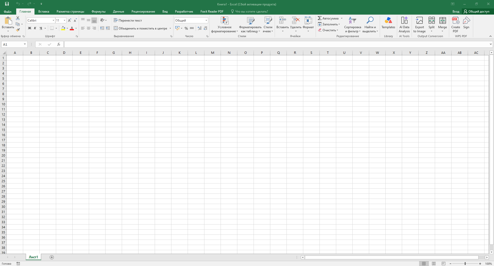

Excel
Справочник по табличному процессору Microsoft Excel. Темы идут в порядке практических заданий: сначала ячейки и ссылки, потом формулы, функции, сводные таблицы и макросы.
Откройте нужную тему через оглавление справа или найдите команду поиском по странице (Ctrl+F).
Интерфейс и лист
Документ Excel называется рабочей книгой и состоит из листов. Основной элемент — ячейка на пересечении строки и столбца.

- Строка формул — показывает содержимое активной ячейки
- Поле имени — адрес активной ячейки или диапазона
- Ярлыки листов — внизу; правый клик → переименовать
- Адрес ячейки — столбец (A…IV) + номер строки
- Ctrl+Home — в начало листа
- Ctrl+End — к последней заполненной ячейке
- F4 — переключение типа ссылки при вводе
- Ctrl+Enter — заполнить выделение одним значением
- Данные на нескольких листах, а имена листов —
Лист1,Лист2. - Пропущенные строки внутри таблицы — ломают сортировку и сводные.
- Заголовки столбцов в одной ячейке вместо отдельного столбца на признак.
- Листы переименованы осмысленно
- У таблицы один заголовок в первой строке
- Нет пустых строк внутри данных
Типы данных
Excel сам определяет тип введённого значения. Это влияет на выравнивание, возможность расчётов и на результат формул.
- Числа — по правому краю
- Текст — по левому краю
- Дата/время —
01.01.2025,12:30 - Логические —
ИСТИНА/ЛОЖЬ - Формулы — начинаются со знака
=
- Денежный — Ctrl+Shift+4
- Процентный — Ctrl+Shift+5
- Числовой с разделителем — Ctrl+Shift+1
- Общий — Ctrl+Shift+~
- Число введено как текст (виден зелёный треугольник в углу ячейки).
- Дата введена как
01/01/25там, где ожидается01.01.2025. - Сумма чисел не считается, потому что ячейки текстовые.
- Числа выровнены по правому краю
- Даты в едином формате по всему столбцу
- Нет «зелёных уголков» на ячейках с числами
Ссылки
Ссылка указывает Excel, из какой ячейки брать значение. Главное различие — относительная ссылка меняется при копировании, абсолютная — нет.
A1— относительная (обе части меняются)$A$1— абсолютная (обе части фиксированы)$A1— фиксирован столбецA$1— фиксирована строкаЛист1!A1— ссылка на другой лист'Имя листа'!A1— если в имени пробелы
- F4 — циклически менять тип ссылки при вводе формулы
- F2 — редактировать ячейку, цветные рамки показывают ссылки
- Формулу скопировали, а ссылку на константу не зафиксировали — расчёт поехал.
- Убрали
$вручную вместо F4. - Ссылка на другой лист записана без имени листа.
- Константы в формулах зафиксированы знаком
$ - При протягивании формулы расчёт остаётся корректным
- Ссылки на другие листы работают
Формулы
Формула всегда начинается со знака =. Внутри — числа,
ссылки, имена функций и операторы.
+,-,*,/— арифметика^— степень%— процент&— сцепка строк=,<,>,<>— сравнение
#ДЕЛ/0!— деление на ноль#ИМЯ?— опечатка в имени функции#ЗНАЧ!— несовместимые типы аргументов#ССЫЛКА!— неверная ссылка на ячейку#Н/Д— нет доступного значения
- Формула начинается с
= - Нет ячеек с ошибкой
#… - Порядок операций задан скобками, если нужно
Встроенные функции
Функция — готовая формула с именем. Вызывается через мастер функций или вводом с клавиатуры.
СУММ(диапазон)— суммаСРЗНАЧ(диапазон)— среднееМИН,МАКС— минимум и максимумСЧЁТ,СЧЁТЗ— количество чисел / непустыхЕСЛИ(условие; да; нет)— ветвлениеСУММЕСЛИ,СЧЁТЕСЛИ— с условием
- Вставка → Функция — мастер функций
- Кнопка
Σ— автосумма - Shift+F3 — открыть мастер
- Диапазон в функции указан без учёта новых строк.
- В
ЕСЛИперепутаны ветви «да» и «нет». - Использован текст вместо ссылки на ячейку с условием.
- Диапазоны корректны, включают все строки
- Функции возвращают ожидаемые значения
- Условные функции проверены на двух-трёх строках
Сортировка и фильтры
Инструменты для работы с таблицей как с базой данных: переставить строки по значению столбца или показать только нужные записи.
- Данные → Сортировка — до 3 уровней
- Данные → Фильтр — автофильтр по столбцу
- Числовой фильтр, текстовый фильтр, фильтр по дате
- «Условие» — расширенный фильтр
- Сортировка захватила заголовки таблицы.
- Внутри таблицы есть пустые строки — Excel теряет часть данных.
- Перед сортировкой забыли сохранить исходный порядок.
- Сортировка по всему диапазону, а не по одному столбцу
- Заголовки не сместились
- Фильтр можно снять — данные вернулись
Сводные таблицы
Сводная таблица — это способ быстро сгруппировать данные и посчитать итоги: суммы, средние, количество — по категориям.
- Вставка → Сводная таблица
- Выбрать диапазон или таблицу
- Перетащить поля в области: Строки, Столбцы, Значения, Фильтры
- Итог по умолчанию — сумма; изменить можно в настройках поля
- Данные в источнике не обновлены — сводная показывает старое.
- В источнике есть пустые строки — сводная «теряет» часть данных.
- Ожидали среднее, а Excel посчитал сумму.
- Сводная обновлена (Данные → Обновить)
- Итоги соответствуют ожидаемым
- Названия строк и столбцов читаемые
Диаграммы
Диаграмма — графическое представление чисел. Тип выбирается под задачу: сравнение, динамика, доли.
- Вставка → Диаграмма
- Выделить диапазон с заголовками
- Выбрать тип: гистограмма, линейчатая, круговая, график
- Настроить подписи, легенду, оси — на вкладке Конструктор
- Диаграмма не обновляется при изменении данных — данные вне диапазона.
- Круговая диаграмма для 10+ категорий — нечитаемо.
- Оси без подписей — непонятно, что сравнивается.
- Тип соответствует задаче
- Есть подписи осей и легенда
- Данные диаграммы обновляются автоматически
Макросы
Макрос — записанная последовательность действий в Excel. Удобен для повторяющихся операций: форматирование, заполнение, однотипные вычисления.
- Разработчик → Запись макроса (или Вид → Макросы)
- Задать имя — латиницей, без пробелов
- Назначить сочетание клавиш
- Выполнить действия → остановить запись
- Alt+F8 — список макросов
- Alt+F11 — редактор VBA
- Ctrl+Break — прервать макрос
- Файл сохранён как
.xlsx— макросы пропали. - Имя макроса с пробелами или на кириллице.
- Кнопка на листе не привязана к макросу.
- Файл сохранён как
.xlsm - Макрос назначен кнопке или клавишам
- Макрос работает при повторном запуске
Печать и область печати
Excel печатает не «как видно на экране», а по настройкам страницы. Их нужно задать заранее, иначе таблица «уползёт» на 10 листов.
- Разметка страницы → Параметры страницы
- Область печати — выделить диапазон → Область печати → Задать
- Колонтитулы — Вставка → Колонтитулы
- Предварительный просмотр — Ctrl+P
- Повторять строки на каждой странице — Печать заголовков
- Область печати не задана — печатается весь лист.
- Заголовки не повторяются на следующих страницах.
- Таблица не помещается по ширине — нет настройки «вписать на 1 страницу».
- Область печати задана
- Заголовки повторяются
- Колонтитул с ФИО, группой и вариантом есть на каждой странице